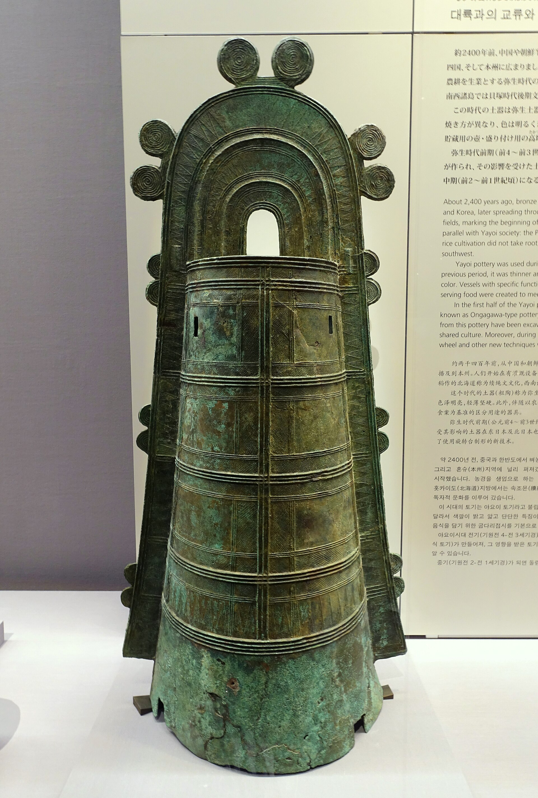

第 24 章
列岛上的秦人村
吉野里遗址的环濠在秋日阳光下呈现出清晰的边界。不是一条简单的沟，而是双重环濠——内濠与外濠之间相隔约三十步，濠壁以特定角度斜切下去，底部铺设碎石以防止雨水冲刷崩落。这种形制，在列岛弥生时代的其他聚落遗址中几乎看不到先例。但在同一时期的大陆齐燕沿海聚落中，类似的防御性环濠却相当普遍。
负责这片发掘区的考古人员注意到，环濠内侧有一排柱洞，间距均匀，显然是栅栏的遗迹。从柱洞的深度和直径判断，这些栅栏原木的高度不会低于三米。这不是对付野兽的设施。这是对付人的。
他将这个观察记录在当天的工作日志中，然后继续向下清理探方中的堆积层。
就在距内濠边缘不到五步的地方，铁锹碰到了硬物。不是石头那种沉闷的撞击，而是金属特有的清脆回响。
那是一枚青铜戈的残片。表面已经布满绿色锈蚀，但戈援的弧线仍然清晰可辨。清洗之后，可以辨认出戈身上有铸造痕迹——不是列岛弥生青铜器常见的那种石范铸造的粗糙表面，而是陶范铸造才会留下的细腻合范线。
这种合范线，与山东半岛齐国遗址中出土的青铜兵器属同一工艺传统。戈的出土位置也值得注意。它不是在墓葬中作为随葬品出现的，而是直接埋在环濠内侧的文化层中——那个位置，通常是防御工事前的活动区域。武器在使用中损坏、遗失，或者被丢弃在战斗发生的地方，然后被后来的堆积层覆盖。
这片环濠聚落的建造者们，曾经用大陆带来的武器，防御过某些攻击。吉野里遗址的规模在弥生时代列岛聚落中是罕见的。整个聚落占地超过四十公顷，被环濠分隔为内城与外城两个区域。
内城地势最高处，有三座大型高床仓库的地基遗迹——立柱粗大，间距严格一致，地板距地面超过两米。这种高床仓库的形制，同样直接承袭自大陆的谷物储藏技术，在长江中下游和山东半岛的战国遗址中均有同类发现。
仓库中曾经储藏的谷物遗存已经被送往实验室做浮选分析。初步结果显示，水稻种子的形态特征与大陆粳稻品种高度一致，而与列岛原有的热带粳稻品种存在明显差异。
这意味着，这些聚落的居民不仅带来了建筑技术，还带来了他们在大陆种植的稻种。他们不是在尝试适应新土地。他们是在新土地上复制旧的生活。
在数百公里之外的畿内地区，奈良盆地的唐古·键遗址出土的另一批陶器，则讲述着一个略有不同但同样清晰的故事。唐古·键遗址的弥生陶器中，有一类器形在列岛本土制陶传统中找不到任何源头：高圈足豆。这种器物的基本形制是浅盘、高足，足部常有镂孔装饰。在战国至汉初的齐燕沿海地区，这种高圈足豆是常见的盛食器皿，通常与鼎、壶配套使用，构成一套完整的饮食器具组合。
但在唐古·键出土的高圈足豆，与大陆原产地的样品之间存在着一个微妙的差异：胎土。对这些陶器进行的岩相分析表明，其胎土中的矿物成分与奈良盆地的当地黏土完全一致。
这些高圈足豆不是在齐地烧造后运到列岛的。它们是在当地取土、当地成型、当地入窑的。
但制作这些陶器的人，心中所想的是大陆的器形，手中所循的是大陆的技术规程。
他们记得那些器皿应该长什么样，并且认为有必要在新土地上继续使用它们。这种“记得”本身就是一个重要的考古学事实。它意味着，这些聚落的制陶者不是偶尔获得了几件大陆样品的当地人，而是曾经在大陆的制陶传统中长期生活和工作过的人。他们掌握的不只是器形的外观，还包括胎土选择、成型工艺、烧成温度控制等一整套技术体系。即使在新环境中原料发生了变化，他们仍然努力按照原有的标准去制作。
唐古·键遗址中同时出土的还有大量纺织工具。陶纺轮的数量尤其庞大，其中一类饼形纺轮的形制与齐地出土的纺轮高度一致。
更重要的是，在遗址的晚期地层中，出现了机织布的压痕——不是手工编结的网纹，而是经线与纬线呈直角交织的平纹组织。这种组织结构需要用腰机或立机才能完成，而在弥生时代的列岛本土纺织技术中，这类机织技术尚未出现。
将这些纺织工具和织物痕迹放在一起，一个生产链条就清晰起来：有人把大陆的纺织技术完整地带到了列岛，从纺轮到织机，从纤维处理到组织结构，整套移植，而不是零星借用。吉野里和唐古·键，九州北部和畿内，两处遗址相距数百公里，出土物却指向同一个方向：有一群来自大陆的人，分批次、分时段地进入了列岛，带来了他们的稻种、他们的陶器、他们的武器、他们的织物和他们的建筑技术。
但这些出土物的年代分布，远比“一次登陆”所能解释的时间窗口要长得多。吉野里遗址最早的大陆类型遗存可以追溯到公元前三世纪中后期，也就是战国末年。环濠的始建年代大致在这一时期。高床仓库的出现稍晚，约在公元前二世纪末。青铜戈残片所属的文化层，断代在公元前一世纪前后。而纺织技术的证据则集中在一至二世纪的堆积中。
唐古·键遗址的年代序列则更为漫长。最早的大陆系陶器出现于弥生时代中期，大约相当于公元前一世纪。但高圈足豆的大量出现是在弥生时代晚期，即公元一世纪以后。
纺织工具的集中出土则更晚，进入了二世纪。两个遗址的遗存所覆盖的时间跨度，加在一起，从公元前三世纪一直延续到公元二世纪。整整五百年。五百年间，不同批次的人在不同的时间点越过大海，带着各自时代的器物与技术，在不同的地点登陆，建立起各自的聚落。
有些人也许来自齐地，他们用的戈铸着齐式的合范线。有些人也许来自燕地，他们做的陶器带着燕式的镂孔装饰。有些人可能会走朝鲜半岛的陆桥——从辽东到乐浪，从乐浪渡海到弁韩，再从弁韩跨过对马海峡到达九州。有些人可能直接走海路，利用季风从山东半岛直航列岛西岸。
但这些都不是一支有统一组织、统一时间、统一目的地的庞大船队所能造成的。任何一支像传说中那样集中了数千人的船队，无论登陆成功与否，都应当留下一个年代高度集中的、规模庞大的、器物组合统一的遗存层。然而考古学所呈现的恰恰相反：遗存是分散的、年代参差的、器物风格多样的。
这五百年的物质遗存沉默地证伪了“单次登陆”的假说。但沉默并不等于没有故事。
公元五世纪中叶，大和政权开始系统性地吸收渡来人担任技术官僚职位。在此之前，列岛政权已经与大陆保持着各种形式的联系，但从五世纪起，这种联系被正式纳入国家体制。“秦人”——这个后来在《日本书纪》中反复出现的名称——正是在这一时期开始作为一个特定的身份类别出现在官方记录中。他们被编入特定的“部”：负责织造的编入“绫部”或“服部”，负责文书记录的编入“史部”，负责土木工程的编入“土师部”。这些技术领域的专门化程度在当时的列岛社会中是空前的，它们所需要的知识体系——文字、织机结构、建筑设计——在列岛本土传统中没有可以追溯的源头。
大和政权需要这些技术。它们的掌握者也需要大和政权的保护。一个在大和朝廷中担任织造监督的渡来人后裔，他的祖父可能是在三世纪末渡海而来的，他的父亲在四世纪中叶被当地豪族征用为织工，他自己因为技术精湛被选入朝廷工房。他掌握着从蚕茧处理到纹样设计的一整套技术流程，用这些技能换取官位、土地和庇护。但他面临一个问题。
大和政权是一个以氏族谱系为基础构建的政治秩序。权力、地位、资源的分配，都与一个人在氏族体系中的位置直接相关。那些能够将祖先追溯到天神——天照大神、素盏鸣尊——的氏族，居于政治等级的顶端。那些能够将祖先追溯到早期天皇、地方国造的氏族，也在体系中占据着稳固的位置。
而一个渡来人，无论他的技术有多重要，无论他做出了多大的贡献，他在这个谱系体系中是没有位置的。他的祖父来自哪里？来自大陆的某个郡县。但在大和政权的氏族秩序中，来自大陆意味着没有谱系。没有谱系意味着无法定位。无法定位意味着在制度上是不可见的。
这个问题不是抽象的尴尬。它是具体的危险。没有谱系就没有土地权利的合法性，没有官职的继承权，没有与权力中心联姻的资格。他的子孙将永远是外来的依附者，每一次政权更替、每一次权力斗争，都可能失去一切。
他需要一个能够被这个体系识别的谱系。在六世纪初叶，也就是继体天皇朝前后，一批渡来人氏族开始系统性地建构自己的起源叙事。
《日本书纪》中记载了若干条这类起源叙事的关键文本。秦氏——这个在五至六世纪的大和政权中掌管财政、文书与织造的重要氏族——将自己的祖先追溯到一个名叫“弓月君”的人物。关于弓月君的记载，《日本书纪》应神天皇十四年条下有这样一段文字：“弓月君自百济来归。因奏之曰：臣领己国之人夫百二十县而归化。然被新罗人遮塞，皆留加罗国。爰遣葛城袭津彦，召弓月君之人夫于加罗。”
这段文本表面上是关于一次移民事件的记载，但它的叙事结构透露了更多信息。弓月君不是说自己“逃亡”而来，而是“归化”——这个词在大和政权的语境中意味着有组织的投效，是一种政治行为。他所带领的不是零散的家属，而是“百二十县”的人口——这是一个完整的行政单位的概念。而“被新罗人遮塞，皆留加罗国”的情节，则赋予了这个迁徙过程以政治冲突的维度。这些叙事元素——有组织、有行政建制的归化、与朝鲜半岛政治势力的冲突——共同塑造了一个形象：秦氏祖先不是普通的流亡者，而是在大陆拥有相当政治地位的统治者，带领自己治下的完整行政建制整体归附大和政权。
这样的形象，是可以放进大和氏族谱系体系中的。但弓月君与徐福之间的联系，在这段记载中还没有出现。《日本书纪》关于弓月君的记载到此为止，后续的文本记载的是秦氏后裔——“秦酒公”等人的事迹。《新撰姓氏录》中，秦氏的谱系被进一步细化，明确称为“秦始皇之后”。
到了八世纪的《古事记》编纂期，徐福的名字开始进入日本文献的视野，并与“秦”这个姓氏发生关联。这个过程的时间线是很清楚的：先是秦氏建立了自己作为“秦始皇后裔”的谱系叙事，然后在这个谱系的基础上，徐福——作为秦始皇派遣出海的最著名人物——被纳入了这个叙事框架。嫁接发生在这两个步骤之间。
从五世纪到八世纪，秦氏在大和政权中的地位不断上升。他们不仅掌握织造和财政，还开始参与律令制度的建设。七世纪末的大宝律令编纂，八世纪初的养老律令修订，都有秦氏后裔参与其中。这些人是识字者、书写者、档案管理者。他们决定了哪些人的故事被写进官史，哪些人的故事被遗忘。
在编纂《日本书纪》和《古事记》的过程中，编纂者们面对一个问题：如何处理渡来人氏族的起源叙事？如果完全按照本土氏族的谱系标准来审视，这些渡来人的祖先确实无法纳入以天神系谱为核心的皇室正统叙事。但这些氏族在大和政权中已经是不可忽视的政治力量，完全排除他们的谱系会在现实中制造严重的政治对立。
最终的解决方案是双重的。一方面，渡来人氏族的起源叙事被收录在官史中，但通常安排在天皇谱系和本土氏族谱系之后，作为次要的附属叙事。另一方面，这些起源叙事被允许与大陆的历史人物——秦始皇、汉高祖、甚至更早的周代诸侯——建立联系。徐福正是在这一制度性安排下，被嫁接到秦氏的谱系叙事中的。
这种嫁接的技术过程，可以从《日本书纪》与《古事记》的文本差异中观察到痕迹。《古事记》几乎没有涉及徐福的内容。《日本书纪》中有若干条关于“秦人”的记载，但徐福的名字并未直接出现在秦氏谱系的主体叙述中。直到平安时代初期编纂的《姓氏录》和各地风土记中，徐福才开始明确作为“渡来秦人之祖”出现。
这说明一个关键的时间差：秦氏的“秦始皇后裔”谱系在七世纪已经建立，而“徐福为秦人始祖”的说法是在此之后才逐渐发展完善的。如果徐福传说真的是从秦人渡来之初就作为群体记忆存在，那么它应该从最早期的记载中就出现，而不是在谱系已经建立之后才被添加进去。
事实上，九州和畿内那些被称为“秦人”的早期聚落中，没有留下任何与徐福相关的祭祀遗迹或口头传统。吉野里遗址的环濠内外，没有任何指向徐福船队的遗物——没有祭祀徐福的社祠遗迹，没有与徐福信仰相关的特定类型祭器，没有任何文字或图像符号可以与徐福本人的传说建立直接联系。唐古·键遗址的情况同样如此。那里的居民制作齐式陶器、使用燕式纺织技术，但他们似乎从未想过要纪念一位名叫徐福的领袖，或者将他们的技术传承追溯到某次统一的官方航海。这些聚落的集体记忆——如果他们没有刻意消除的话——指向的是多次、多批、分散的迁徙经验，而不是一支由某个著名方士领导的统一船队。
但到了平安时代，情况完全不同了。在纪伊半岛的熊野地区，出现了祭祀“徐福之宫”的神社。在筑紫（今九州北部），出现了据称是徐福登陆地的若干地点。在尾张地区，秦氏后裔编纂的族谱中开始明确写道：“始祖弓月君，即秦始皇之裔，徐福之后也。”
这些后来出现的纪念地点和谱系文书，与其说是远古记忆的直接遗存，不如说是中古时期秦氏后裔在建构自身政治身份时，对地理景观和文献传统的系统性重塑。他们选择了某些地点——那些恰好位于他们势力范围之内的地方——将其命名为徐福登陆地。他们重修了某些神社，将其主祭神与徐福联系在一起。他们在编纂族谱时，将弓月君的谱系向上延伸，通过秦始皇连接到徐福，从而将秦氏自身的起源叙事与中古时期传入日本的徐福传说文本结合起来。
这不是伪造。这是谱系建构。在大和政权的政治传统中，谱系建构是一种合法的政治行为，是氏族争取地位和资源的标准手段。本土氏族建构从天神到人皇的谱系，渡来人氏族建构从大陆帝王到本族始祖的谱系——两者的操作逻辑是完全相同的。只不过渡来人的建构有一个本土氏族所没有的特点：他们的建构必须跨海。大陆文献中有现成的人物和故事可以使用。秦始皇派遣徐福求仙，徐福带领数千童男女东渡不归——这个故事在《史记》中记载清晰，在《汉书》和《三国志》中也有提及。
到了七至八世纪，随着遣唐使和留学僧将大量汉籍带回日本，徐福故事在日本知识界已经广为人知。秦氏后裔的谱系编纂者们面对的是一个现成的叙事资源：一个与秦始皇有关、带领大批人口渡海、最终消失在东方海上的方士。这个叙事与秦氏自身的需要完全吻合。他们需要一个能够在谱系体系中锚定“秦”这个姓氏的祖先，徐福提供了这种可能。
他们需要一个能够解释祖先为何带领大量人口渡海的原因，徐福故事中的“求仙不归”提供了一个体面的理由。他们需要一个能够与本土神祇谱系并置而不显低微的始祖身份，秦始皇之臣、率领数千人的船队领袖，提供了这种地位。嫁接发生在文本与记忆之间、在汉籍与列岛聚落传统之间、在政治需要与历史资源之间。
现在回过头来看吉野里遗址出土的那枚青铜戈残片，它提供了一个与此完全不同的图像。那枚戈的主人——他可能是一个齐地逃亡者的后代，或者本人就是渡海而来的齐人——他的生活与徐福毫无关系。
他使用这枚戈是为了防御环濠外的敌人，他住在高床仓库附近，吃大陆品种的稻米，用齐式陶器盛食。他所属的群体是一批批、一代代渡海而来的大陆移民中的一支。他们没有统一的领袖，没有统一的谱系，没有统一的“徐福后代”身份认同。他们只是渡海而来的人，在新的土地上尝试活下去。
但在平安时代某个秦氏后裔编纂者的案头，这枚戈的主人的故事不会被写进谱系。谱系所需要的不是零散的、多批次的、籍籍无名的流亡者。谱系所需要的是一位有名有姓的、与帝国权力中心直接相关的、能够支撑政治身份的始祖。徐福恰好满足所有这些条件。在编纂者的笔下，弓月君被写成了徐福的后裔，徐福被写成了秦始皇的臣子，秦始皇被写成了秦氏这个姓氏的最终来源。
一条清晰的、从帝国权力中心延伸到大和朝廷技术官僚阶层的谱系链条被建构出来。那些零散渡海者的集体经验——分散的启程、危险的航渡、艰难的定居、缓慢的融入——全部被压缩、删减、重塑，纳入到一个单一的、有主角的、有明确起始与目的地的叙事中。
这个叙事在中古日本获得了巨大的成功。秦氏后裔凭借这个谱系巩固了他们的政治地位，徐福传说也因此在日本落地生根，并开始反向传播。这种反向传播的轨迹是清楚的。在北宋时期，一些日本僧人和商人开始向中国方面讲述徐福在日本列岛的传说，声称在某地有徐福墓、某地有徐福庙。这些说法后来被中国文人记载在笔记和方志中。到了明清时期，徐福东渡日本的说法已经在中国沿海地区广为流传，甚至出现了一些声称亲眼见过徐福遗迹的游记文字。
但这些反向传播的传说所讲述的，已经不是大陆《史记》中的那个方士徐福，而是经过秦氏谱系嫁接之后的徐福——那个与列岛秦人聚落被联系在一起、被赋予了“秦人始祖”身份的徐福。考古学所提供的物质证据——那些环濠、高床仓库、齐式陶器、合范线青铜戈——与此完全是两个层面的存在。它们所证明的不是一个方士带领一支船队的单次登陆，而是数百年间多批移民的持续迁徙。它们所讲述的不是谱系的政治建构，而是生活的物质复制。
在秦人谱系编纂者的书案上，来自汉籍的徐福文本与来自列岛聚落的渡来人记忆交汇在一起。案上铺着从唐舶来的纸，砚中是徽墨，笔管是本地所制的竹杆。编纂者的手很稳。他知道自己在做什么。
不是在编造谎言，而是在为一个已经在政治现实中占据位置的氏族，补上一个它本应拥有但历史没有提供的谱系。他将弓月君的名字写在徐福的名字之后。两个名字之间相隔了八百多年。他加上“裔也”两个字。一个联系就此建立，不可撤销。
窗外，奈良盆地的水田在秋收之后露出灰褐色的泥土。这些水田的灌溉系统，有一部分是他的祖先设计修建的。那些祖先渡海而来时，带的是大陆的水利技术。他们修筑了堤堰，挖掘了渠沟，将奈良盆地的低湿地改造成了规整的水田。这些工程的技术逻辑，与大运河沿岸的灌溉系统同出一源。
但水利技术不需要谱系。官职需要。编纂者继续工作。他接下来要处理的是“秦酒公”的记载。这是秦氏在五世纪末的一位重要祖先，曾经为雄略天皇掌管府库。
关于秦酒公的现存记载中，有许多不能细究的地方——他的前任因为账目不清被处死，他接手的是一个烂摊子，他如何能够在短时间内理清府库、建立新的财计制度，这个问题在现有记载中语焉不详。
但编纂者不会追问这些。他的任务不是核实。他的任务是建构。他在秦酒公与弓月君之间建立起谱系连接，在弓月君与徐福之间建立起谱系连接，在徐福与秦始皇之间建立起君臣连接。每一条连接都使用相同的格式：“某，某之后也。”这种谱系书写格式在整个东亚的氏族传统中都是通用的。当天的工作结束时，编纂者将墨迹已干的文书卷起来，搁在旁边的木架上。木架上已经堆了好几卷类似的文书。
它们最终会被送进大和政权的档案库，与天皇的系谱、本土氏族的谱牒一起保存。它们会在需要的时候被引用，被复制，被传抄到各地的国造和豪族手中。它们会成为未来所有引用的来源，所有争论的判据。在那个木架上，紧挨着谱系文书的旁边，搁着一个小物件。那是一枚陶纺轮，是编纂者的部属在附近遗址中偶然掘出的。
纺轮的形制与列岛本土的完全不同——饼形，穿孔居中，边缘略厚，表面有细密的弦纹。这种纺轮在大陆齐地战国遗址中是常见器物。编纂者每天都能看到这枚纺轮。
但他从未想过要将它写进谱系。纺轮不讲述谱系。它讲述的是另一些人的故事：那些在数百年间，用船装载着稻种、纺轮、陶范和青铜武器，分批渡海而来的人们。他们没有留下名字，没有建立谱系，他们的子孙后来被编入了绫部、服部、史部和土师部，他们的技术被吸收进了大和政权的国家机器，而他们自己的故事则在谱系建构的过程中被抹掉、被覆盖、被代替。
唯有这枚纺轮沉默地证明着他们的存在。它的弦纹中嵌着来自奈良盆地的细泥，那是两千年前某个渡来女子手指上的泥土。她在那块她未曾出生的土地上，用她在大陆学会的技术，制作了这枚纺轮。然后她用它纺线，织布，养育了下一代。她的孙女嫁给了当地一个豪族的次子。她的曾孙学会了大和政权的官话。她的玄孙在五世纪中叶获得了第一个官位，从此她的后代进入了谱系的世界。
又过了两百年，她后代的后代——那位编纂者——将徐福的名字写进了她的谱系。但她自己从未听说过徐福。她只是记得如何制作饼形纺轮。吉野里环濠中出土的那枚青铜戈的残片，如今躺在博物馆的恒温展柜里。标签上写着它的出土位置、年代判断、工艺特征。参观者从展柜前走过，阅读这些说明文字，产生一个大致的概念：这是弥生时代从大陆传来的兵器。
他们不会读到这枚戈在环濠边被握在什么人手中。他们不会读到那个人所属的群体后来经历了什么。他们不会读到，在距他们此刻所站位置不远处，曾经有一排三米高的栅栏，栅栏外有敌人，栅栏内有高床仓库，仓库里储藏着从大陆带来的稻种所收获的粮食。那些粮食已经被吃掉了。那些栅栏已经腐烂了。那些人已经死了。
考古学可以复原环濠的走向、柱洞的排列、仓库的地基。它可以分析陶器的胎土、青铜器的合金成分、稻种的形态特征。它可以证明大陆人口向日本列岛的迁徙是一个持续数百年的漫长过程，可以证明这个过程的多元性、分散性和非组织性。
但考古学无法复原那些渡海者的名字、面孔和声音。它只能沉默地陈列他们的遗物，由这些遗物构成的整体图像，与后来谱系文献所建构的叙事之间，形成一种持久的、不可弥合的张力。这种张力最终被收束在一个制度的落点中。在日本中古时期的律令制下，秦氏获得了固定的官职配额、土地权利和祭祀特权。
他们的谱系叙事成为官方认定的身份依据，他们的始祖祠在各地建立，他们的族谱被不断续修。徐福传说作为这个谱系叙事的核心环节，被嵌入到了日本的国家制度和地方传统之中。而吉野里和唐古·键，以及更多未被发现的弥生时代渡来人聚落遗址，则是这个制度性叙事之外的另一重存在。
它们不讲述徐福，不讲述弓月君，不讲述秦始皇后裔。它们只讲述一件事：在这片列岛上，曾经生活过一群带着大陆器物和技术而来的人们，他们的到来比任何谱系所能追溯的都要久远，也比任何叙事所能容纳的都要分散。

他们的故事在制度中被简化为一两个名字，而他们真实的迁徙历程——那一艘艘载着稻种与纺轮的小船，在数百年间，冒着不同季节的风与浪，从不同的港口出发，驶向不同的海岸——则已经从记忆中彻底消失，只留下地层中那些不会说话的残片。